Any silicon. Anywhere. One platform.
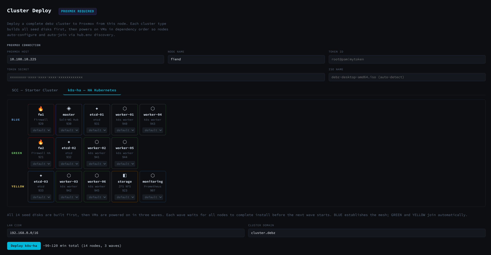
The Cluster Deploy view lets you define a multi-node cluster — assigning roles, storage profiles, and WireGuard planes — then deploy it across bare metal or VMs in a single operation. Every node is provisioned from the same ISO; the Cluster Manager becomes the source of truth for the entire cluster.
Low MTTR. Invisible deployment. A stable base that just works every time. Boot environments make a bad upgrade a 30-second rollback. Snapshots before every
apt upgradeare automatic. Encryption, replication, atomic rollbacks — baked in, not bolted on.The same dataset model that protects the OS extends to everything running on it. VMs, containers, Kubernetes PVs, Firecracker microVMs — back any of them with a ZFS dataset and you get snapshots, encryption, and
zfs send/recvreplication for free. A running container or pod becomes something you can snapshot, clone, and ship to another node without touching the workload.The idea was to engineer all of that into a single command — or a mouse click. Burn it, plug it into a server, and it becomes a KVM hypervisor ready to spin up VMs and clones. Plug it into a laptop, use it as a desktop, power off, and your machine is exactly as you left it. Span a cluster across Proxmox, AWS, Azure, and GCP simultaneously — it doesn’t replace your platform, it builds a minimal one underneath it, out of nothing but a base Debian 13 ISO.
A bare-metal deployment tool, built from scratch, just for you — enjoy.
beta_0.08 — Deploy Control Plane.
Boot the ISO, run the installer, select Deploy Control Plane, and the full management system installs permanently onto that machine. No live USB required after install. Worker node templates, golden image pipeline, and additional profiles are in active development.
Control Plane — Desktop
Installs GNOME with a minimal dock: terminal, tmux, Firefox, and the debz installer shortcut. Nothing else on the desktop — no distractions. The Web UI management dashboard auto-starts and is pinned to the dock. This is the hands-on control plane image — log in locally and manage the cluster from the desktop or browser.
Control Plane — Server
Headless install — no GNOME, no display manager. The Web UI runs as a systemd service on port 8080 and is accessible from any browser on the network. SSH in, manage via the Web UI, or use Ansible playbooks. Same ZFS layout, same WireGuard planes, same enrollment API — just no local desktop session.
Everything a host OS should be.
Opinionated decisions are made upfront so you don’t have to. Every feature serves one goal: a host substrate that is secure, rollback-capable, cluster-ready, and deployable anywhere — with or without internet access.
ZFS on root — always
Every mount point is a ZFS dataset. Deterministic layout, AES-256-GCM encryption, dedup and compression available without restrictions. rpool uses the full modern feature set — no grub2 compat lock.
Boot environments
ZFSBootMenu manages OS snapshots as bootable environments. Bad upgrade? Roll back in 30 seconds — no reinstall, no pain. debz-upgrade creates a BE automatically before every dist-upgrade.
Continuous snapshots
APT hooks snapshot rpool before every package operation. A 15-minute timer protects /srv. Count-based retention (10 OS snapshots, 4 /srv snapshots) keeps it lean with no time-based expiry to configure.
Air-gap installer
Full APT mirror baked into the ISO at build time. Deploy in a SCIF, restricted data centre, or a ship at sea — no outbound internet required at any point during or after installation.
Secure Boot + TPM
Generates a per-machine MOK key, signs ZFS DKMS modules, configures auto-signing for future kernel upgrades, and queues MOK enrollment automatically on first boot.
eBPF observability
bpftool, bpftrace, and bcc-tools pre-installed. Attach probes to any kernel event — syscalls, TCP retransmits, block I/O, DNS, process ancestry — without recompiling or rebooting.
Four WireGuard planes
wg0 enrollment, wg1 management, wg2 Kubernetes, wg3 storage. Dedicated encrypted overlay for each traffic class. Live peer updates via wg set — no interface restart as nodes join.
Ansible-ready out of the box
Ansible is installed on every node. Bring your own playbooks — drop them into darksite/playbooks/ and run them from postinstall.sh. The WireGuard mesh is your inventory, ZFS datasets are your storage backend. Your automation runs on top, unmodified.
Kubernetes on wg2
kubeadm + Cilium (kubeProxyReplacement=true) + Hubble. All nodes bind kubelet and kubeadm to wg2. Workers join via debz-k8s-join which fetches the join command from the Cluster Manager automatically.
Golden image pipeline
Headless QEMU install → qcow2 golden image → CoW thin-clone per node (~1 MB each). Each clone gets a unique hostname, machine identity, and network configuration stamped in seconds.
Browser management UI
Python3 asyncio WebSocket server at :8080. 5-step install wizard, WireGuard panels, Golden Images, VMs, ZFS pool health, Kubernetes nodes, fleet inventory, real-time log streaming.
VDI streaming
mediamtx baked in: SRT ingest :8890, HLS :8888, WebRTC :8889. wf-recorder → FFmpeg pipeline captures Wayland output. Optional NVIDIA nvenc acceleration. Stream to any browser or SRT client.
ZFS replication
Any node can stream datasets to any ZFS host — TrueNAS, another node, or a cloud VM — using standard zfs send/recv over wg3. RPO of 15 minutes for /srv data.
DEBZ-SEED unattended install
Attach a FAT32 disk labeled DEBZ-SEED containing answers.env. On live boot, debz-autoinstall.service detects it and runs a fully headless install — zero interaction required.
Two ISO profiles
Desktop (GNOME, GDM, dark mode, Web UI on dock) and Server (headless, SSH only). Same installer, same ZFS layout, same WireGuard planes — different package set. Both ship with eBPF tooling.
postinstall.sh hooks
Drop your postinstall.sh on the DEBZ-SEED disk. The installer stages and runs it on firstboot inside the installed chroot — add apt repos, run Ansible playbooks, configure your ETL pipeline. Zero friction.
Ansible + Helm pre-installed
Ansible, Helm, kubectl, AWS CLI, gcloud, Azure CLI, Firecracker, and Hubble are baked into the live ISO. Your playbooks and charts work from day one — debz just provides the substrate.
Drop-in Debian
It’s Debian 13 underneath. Replace your existing Debian ISO and gain ZFS, boot environments, WireGuard mesh, and cluster tooling — without touching a single existing playbook, container, or workflow.
What can you build?
It’s a general-purpose host OS. The ZFS + WireGuard + Kubernetes stack is not prescriptive — it’s a set of primitives you combine for your workload.
Landing sites + web apps
Run nginx or Caddy on a KVM or STORAGE node. ZFS snapshots protect /srv/www
every 15 minutes. Replicate over wg3 to an offsite node for instant failover. Deploy via
Ansible or Helm. Serve from bare metal or a Proxmox VM with sub-millisecond disk I/O.
Remote desktop (VDI)
Deploy the VDI template: mediamtx ingests a wf-recorder SRT stream and re-publishes it as HLS and WebRTC. Any browser connects to port :8889 — zero client install required. Optional NVIDIA nvenc for GPU-accelerated encode. Wayland desktop fully headless.
MicroVMs + serverless
Firecracker is pre-installed on KVM nodes. MicroVMs boot in under 125 ms. Stamp 50 CoW clones of a golden Firecracker rootfs in minutes. Achieve serverless-like cold-start times on bare metal you own.
Storage cluster
STORAGE template nodes export ZFS pools over NFS, iSCSI, and Samba via wg3.
zfs send/recv replicates datasets to TrueNAS, another node, or a
cloud VM. 15-minute snapshots of /srv give a 15-minute RPO with zero
additional tooling.
ETL pipeline
KVM nodes running Apache Spark and Kafka with data on ZFS. 15-minute
/srv snapshots protect pipeline state. Use postinstall.sh
to install pipeline-specific packages from the DEBZ-SEED payload. Each node's
hostname and management IP are available as environment variables for per-node configuration.
Kubernetes cluster
Cluster Manager + KVM workers with Cilium CNI, Hubble observability, and Helm. All east-west
traffic over wg2. debz-k8s-join fetches the join command from the Cluster Manager
automatically. Workers join and are fully operational in under 90 seconds from first boot.
Air-gapped data centre
Build the ISO once with your private packages baked into the darksite mirror. Deploy 100 nodes from USB or PXE with zero internet access at any stage. DEBZ-SEED darksite directories add site-specific packages per rack.
Dev / CI lab
Build one golden image per test environment definition. CoW-clone a fresh environment in 30 seconds with a unique hostname, machine-id, and WireGuard identity. Delete the clone after the CI run. Combine with Firecracker for sub-second environment creation.
Hybrid cloud
The same Ansible playbooks and Helm charts target on-prem KVM nodes and AWS EC2, GCP Compute, or Azure ARM VMs simultaneously. WireGuard wg1 extends across cloud providers — no VPC peering, no transit gateway, no lock-in.
No wrappers. No state. No excuses.
Every tool in the modern infrastructure stack adds abstraction, state, and blast radius. Terraform state files corrupt. Packer pipelines drift. Ansible playbooks accumulate workarounds. It eliminates the category. The hard problems — boot environments, encryption, replication, snapshots, zero-trust networking — are solved at the OS level, permanently, before your first login.
Spawn
clone anything instantlyZFS CoW clones mean a new node, VM, container, or CI environment costs zero disk space and under five seconds to create. Clone a golden Firecracker microVM rootfs 50 times in a minute, each with a unique machine-id, hostname, and WireGuard identity. Clone an entire Kubernetes worker template — the new node joins the cluster automatically, no manual join token, no static IP to manage.
This isn’t possible with traditional Linux: ext4 and LVM don’t offer writable CoW clones you can boot from. Every other approach requires copying gigabytes, re-running config management, or reaching into a registry. debz clones the running state, including memory-resident config.
debz-be clone worker-golden worker-17 && debz-be activate worker-17
Replicate everything. Seamlessly.
k8s · containers · vms · data
zfs send | zfs recv over wg3 replicates entire boot environments,
container images, VM disks, and /srv datasets to any node on the estate
— on-prem, cloud, or air-gapped. Kubernetes persistent volumes, PostgreSQL data,
Gitea repos, CI caches: all replicated as atomic ZFS snapshots. No rsync drift.
No incremental-backup corruption. Either side of the pipe can be TrueNAS, another
another node, or any ZFS host.
Fail over an entire site by activating the replicated boot environment on a standby
node. RPO is the snapshot interval (15 minutes for /srv, on every
APT transaction for the OS). RTO is a reboot.
zfs send -R rpool/ROOT/default@snap | ssh node-dr zfs recv rpool/ROOT/default
Per-dataset encryption
native zfs · tpm2 + tang sealed
Each ZFS dataset carries its own encryption key. rpool/ROOT/default
is sealed against TPM2 PCRs and a tang server using Shamir secret sharing
(threshold 2). The node decrypts automatically on trusted hardware — and only
on trusted hardware. Swap the motherboard and the pool stays locked.
Tenant datasets can carry separate keys. Encrypt rpool/srv/customer-a
with a different passphrase than rpool/srv/customer-b. Destroy a key
and the data is cryptographically gone — no secure-erase required.
No LUKS layer beneath ZFS. No performance overhead from stacked crypto.
zfs create -o encryption=aes-256-gcm -o keylocation=prompt rpool/srv/tenant-a
Automated data protection
apt hooks · 15-min timer · count-based pruningTwo automatic snapshot tracks run independently:
- APT / dpkg hook — snapshots
rpool/ROOT/defaultbefore every package operation. Botched upgrade? Roll back in one command. The last 10 pre-upgrade states are always available. - 15-minute
/srvtimer — snapshots service data every quarter-hour, keeping the last 4. Covers databases, git repos, container volumes, anything under/srv.
No cron to configure. No backup agent to install. No NFS mount to a backup appliance. The protection is in the filesystem.
On-the-fly darksite builds — no internet required
air-gap · zero-internet · custom payloadThe entire distribution is built from scratch on demand. Kernel modules, custom packages, container images, Helm charts — the build process resolves, downloads, and bundles everything automatically at build time. No pre-baked distribution to maintain, no stale image to patch. Git is wonderful right up until you try to use IaC tools with no internet connection. This makes that problem go away entirely.
The result is a fully self-contained darksite image tailored to any configuration —
à la carte. Drop packages, OCI images, and scripts into darksite/ and
they ride along in the ISO. Every node gets the same bit-for-bit payload, with zero
internet access required at install time. Golden images for any role, any stack,
built and packaged in a single command. Useful for anyone who has wrestled with
Intune, offline Linux deployments, or disconnected edge environments and would rather
just burn a USB and walk away.
darksite/
packages/ # .deb files
images/ # container OCI tarballs
files/ # arbitrary assets
postinstall.sh
Migrate entire CI/CD pipelines. Change nothing.
gitea · woodpecker · helm · k8s
Move a Gitea + Woodpecker CI stack onto it by placing the container images and
Helm values files in darksite/. The pipeline runs identically —
same webhooks, same secrets (re-sealed against the new TPM), same Helm release names.
Kubernetes persistent volumes replicate over wg3. The migration is a
zfs recv away from being complete.
Developers don’t change a single pipeline YAML. The WireGuard mesh gives runners the same private IPs on the new hardware. Gitea sees the same hostname. Registry mirrors are already in the darksite payload.
Ansible-ready. Your playbooks. Zero lock-in.
ansible · helm · your playbooks · zero lock-in
Ansible, Helm, kubectl, AWS CLI, gcloud, and Azure CLI are pre-installed on every
node. The WireGuard mesh is your inventory — every node has a stable, routable
management IP the moment it registers. Drop your playbooks into
darksite/playbooks/ and call them from postinstall.sh.
No changes to your existing automation required.
Each node registers itself on first boot — hostname, IP addresses, hardware profile, and role are all available to your playbooks as inventory variables. Your automation runs on top of the platform, unmodified and unopinionated.
Self-healing. Deduplication. Done.
zfs checksums · scrub · dedup · compressionZFS checksums every block on read and write. Silent data corruption is detected and repaired automatically from a mirror or RAIDZ parity. A weekly scrub validates every block on disk without downtime. No RAID controller firmware to trust. No fsck on boot. No bitrot surprises six months later.
Block-level deduplication means identical container layers, VM base images, and golden clones consume space once. LZ4 compression is on by default — log files, database WAL, and source trees typically compress 3–5×, effectively giving you more IOPS from the same hardware.
A-la-carte infrastructure.
Every node has a template. Set DEBZ_TEMPLATE=<name> in the
answer file — or pick it in the TUI installer. The base OS is always identical: ZFS on
root, WireGuard, node_exporter. Templates install their own software on
first boot and self-register with the Cluster Manager so the dashboard manages them automatically.
Cluster Manager
WireGuard hub for all four planes, GNOME + Web UI dashboard, dnsmasq PXE/DNS, nginx enrollment endpoint, nftables. Installs onto the machine — the full control plane lives with the hardware.
KVM
QEMU/KVM hypervisor with OVMF UEFI, libvirt bridge networking, and virt-manager. Runs golden image CoW clones as VMs. Spawn directly from the Web UI.
STORAGE
Dedicated ZFS storage node. NFS exports, iSCSI via tgt, Prometheus ZFS metrics. Snapshotted every 15 min, replicated over wg3 to any ZFS host.
VDI
Headless Wayland desktop streamed to any browser. mediamtx handles SRT ingest, HLS, and WebRTC. Optional NVIDIA nvenc for GPU encode.
PROXMOX
Installs proxmox-ve on the debz ZFS base. Generates a root@pam!debz-manager API token on first boot and registers with the Cluster Manager — dashboard deploys VMs to it automatically.
MONITORING
The PLG stack. Prometheus scrapes node_exporter on every node, Loki collects logs from Promtail, Grafana shows a unified fleet dashboard — metrics and logs in one view.
LANDING
Hardened SFTP-only drop zone. Each user gets a ZFS dataset with a quota and an OpenSSH chroot jail. No shell, no port forwarding. ZFS encryption on by default.
LOAD BALANCER
HAProxy + Keepalived floating VIP for Kubernetes API HA. Backends added dynamically when k8s control-plane nodes register. VIP default: 10.100.10.200:6443.
Four dedicated WireGuard planes.
Every debz cluster uses four encrypted WireGuard overlays — one per traffic class.
Blue fleet IPs derive deterministically: node 3 is always 10.7N.100.3.
Green fleet uses 10.7N.200.N. No DNS required — you always know the IP from index + color.
Live peer updates use wg set — no interface restart as nodes join.
| Plane | Network | Port | Purpose | Key services |
|---|---|---|---|---|
wg0 |
10.77.0.0/16 |
:51820 | Enrollment | New node enrollment · hub.env distribution · unreliable on some hardware — never bind services here |
wg1 |
10.78.0.0/16 |
:51821 | Management | Cluster Manager binds here · SSH · Web UI · admin tools · services bind here |
wg2 |
10.79.0.0/16 |
:51822 | Kubernetes | kubelet --node-ip · Cilium CNI · kubeadm advertise · Hubble |
wg3 |
10.80.0.0/16 |
:51823 | Storage | NFS exports · iSCSI · ZFS send/recv replication |
From ISO to cluster in minutes.
Build a fully installed qcow2 golden image once per template, then stamp CoW thin-clones
in seconds — each clone is ~1 MB until written. debz-stamp-identity
injects a unique hostname, machine identity, and network configuration into each clone.
Build a golden image
Boots the live ISO headlessly in QEMU with a DEBZ-SEED FAT32 disk containing answers.env.
Full unattended install runs, debz-apply-role configures the template, system shuts down cleanly,
qcow2 exported to /var/lib/debz/golden/golden-kvm.qcow2.
# headless QEMU install → qcow2 golden image
debz-install-target --config answers-kvm.env
debz-install-target --config answers-master.envStamp CoW clones
qemu-img create -b golden-kvm.qcow2 -f qcow2 kvm-01.qcow2 per clone. Then
debz-stamp-identity mounts via qemu-nbd, imports the ZFS pool,
and writes a unique hostname, machine identity, and network configuration into each clone. Each clone starts at ~1 MB.
# stamp 8 CoW clones with unique identities
debz-stamp-identity --base golden-kvm.qcow2 \
--count 8 --hostname-base kvmSpawn VMs
Boot stamped clones as libvirt VMs locally or as Proxmox VMs over SSH. Nodes boot, register with the Cluster Manager, configure their network planes, and apply their role template — fully operational within ~90 seconds of first boot.
# upload and boot on Proxmox via the Web UI
# or boot locally with libvirt — nodes join automatically
virsh start kvm-01Cluster joins automatically
Each new node registers itself with the Cluster Manager, reporting its hostname, IP addresses, hardware profile, and role. The Cluster Manager issues its network identity and adds it to the cluster — no manual steps required.
# Watch nodes join in real time
journalctl -fu debz-autobootstrapBuild for any environment — including ones with no internet
Golden images are built à la carte. The entire distribution is assembled from scratch
on demand — kernel modules, packages, container images, Helm charts — all
resolved and bundled automatically. Drop anything into darksite/ and it
rides along in the image. Git is wonderful right up until you need IaC tools with no
internet connection. This makes that go away. Useful for air-gapped data centres,
edge deployments, or anyone who has wrestled with offline Intune or disconnected Linux
environments and would rather just burn a USB and walk away.
# build a fully offline golden image with custom payload
# darksite/ packages + images + postinstall.sh bundled automatically
./deploy.sh golden TEMPLATE=kvmScreenshots
The debz Web UI runs on the live ISO and on every installed node. Boot from USB, open a browser, and you have full control — no separate management server, no agents to install, no cloud dependency.
debz treats a cluster as a first-class object. You design it visually — assigning node roles, storage profiles, and inter-node WireGuard links — then deploy the whole thing in a single operation. Every node is provisioned from the same ISO; the Cluster Manager stores the desired state and continuously reconciles what is actually running against what should be running.
The Service Designer lets you define workloads as ZFS datasets. Choose a runtime — systemd, systemd-nspawn container, or Podman — set the image, replica count, target nodes, and replication destinations. debz creates the dataset on the appropriate node and starts the service. Because the workload lives in a ZFS dataset, you can snapshot it, clone it for staging, or replicate it to another host or a cloud provider with a single zfs send | ssh … zfs recv pipeline. Cloud Deploy extends this to VMs on Hetzner, AWS, or other providers — they join the WireGuard mesh and become full cluster members.
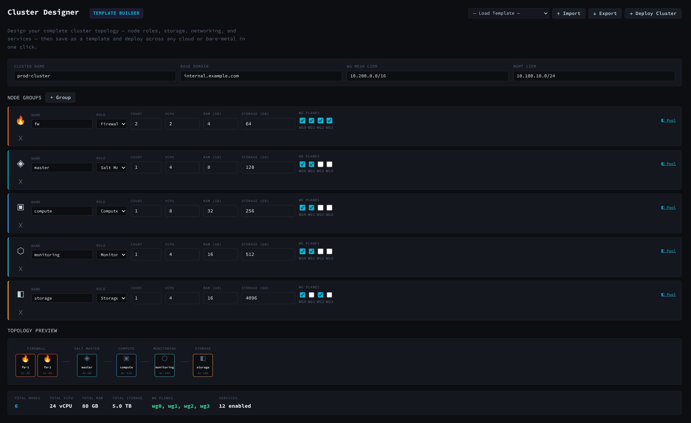
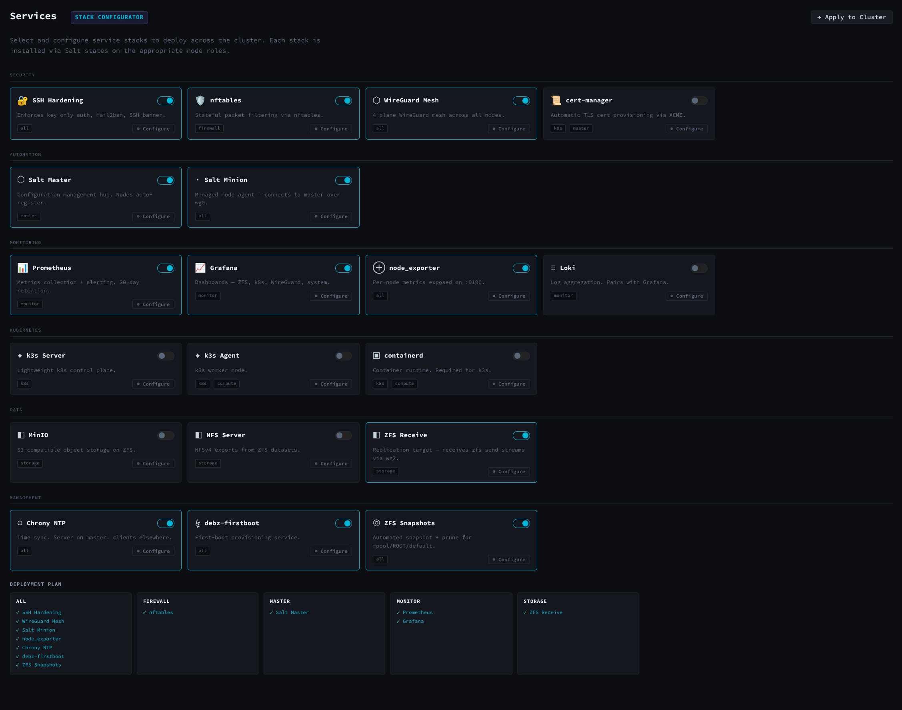
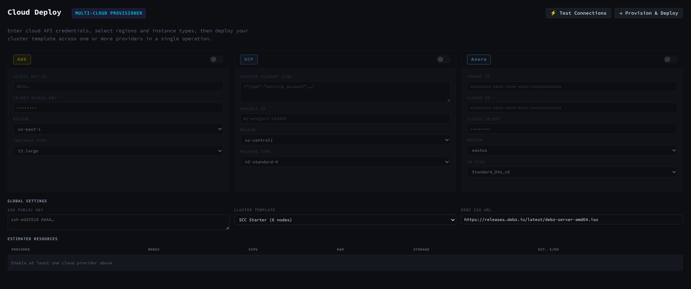
Every node in the cluster registers itself with the Cluster Manager, reporting its hostname, IP addresses, WireGuard public keys, hardware profile, and current role. The Nodes view shows live status for the entire fleet — online, offline, last seen, cluster membership — so you always know what you have and where it is.
The Spawn view is where the "cattle not pets" philosophy becomes concrete. From here you can launch a KVM virtual machine, a systemd-nspawn container, a Podman workload, or a bare ZFS micro-filesystem — all on any node in the cluster. Existing workloads can be cloned instantly using ZFS copy-on-write: spin up a staging clone of production in seconds, test a change, then destroy it. Golden Images lets you snapshot a fully configured node root filesystem and publish it as a base image; new nodes clone from it for a consistent, reproducible starting point. The Kubernetes view gives direct access to workload orchestration across the fleet.
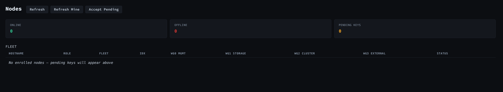
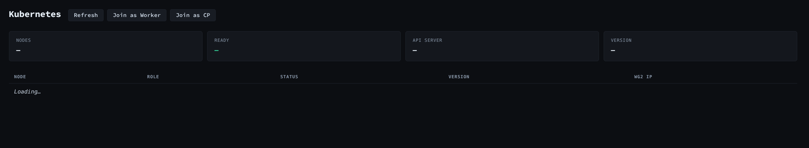
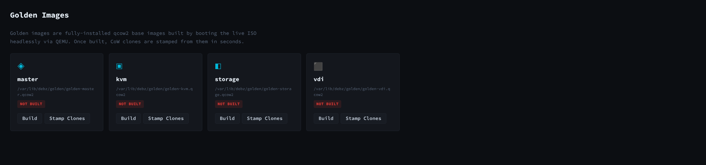
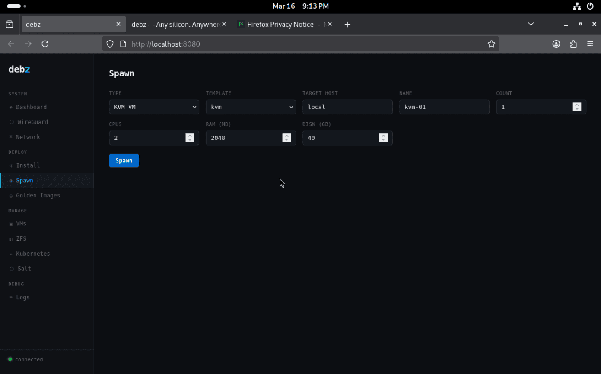
debz ships with four dedicated WireGuard planes baked in at install time: management, storage, WAN, and cluster traffic are intentionally separated so that storage replication never competes with management access and cluster east-west traffic stays off the public internet. Keys are generated on each node, and the Cluster Manager collects and distributes public keys so every peer relationship is established automatically.
The Firewall Designer lets you write rules against named groups of hosts and services rather than raw IP addresses. Rules compile to nftables and are distributed cluster-wide. The Credentials view manages SSH keys, API tokens, WireGuard keypairs, and MOK certificates in one place — stored encrypted in the state database and distributed only to the nodes that need them. Per-node network configuration (bonds, bridges, VLANs, static routes) is applied live without a reboot.
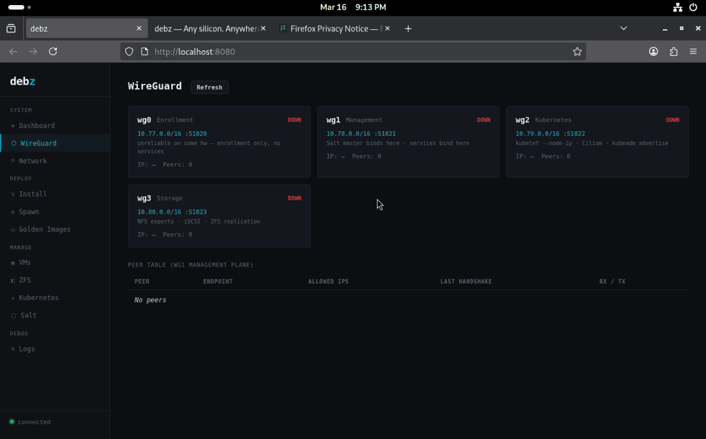
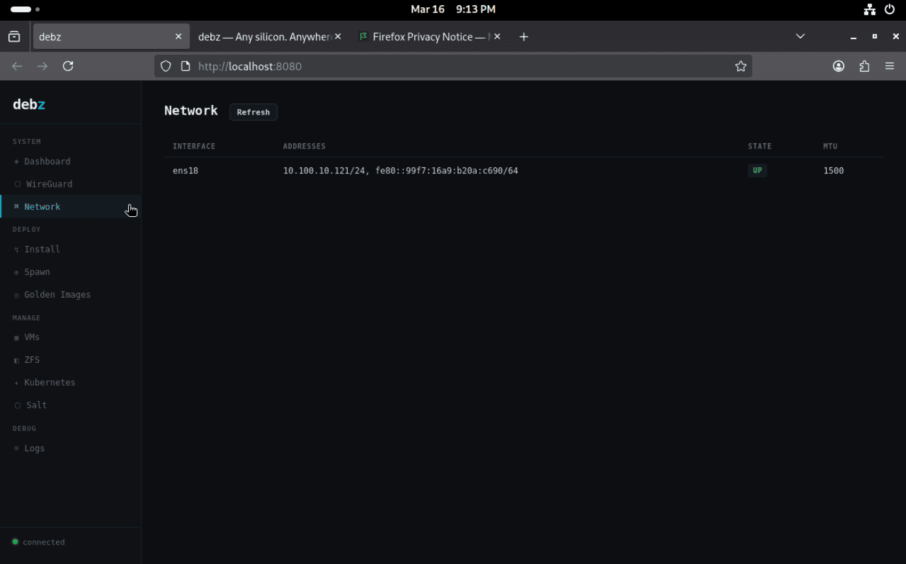
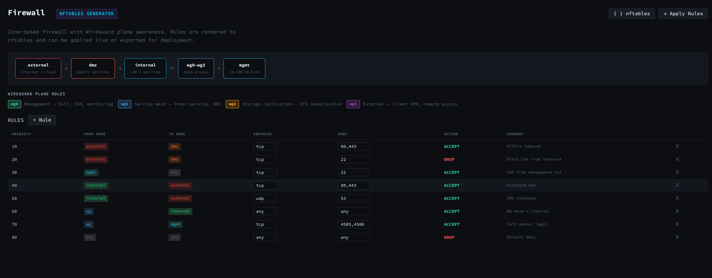
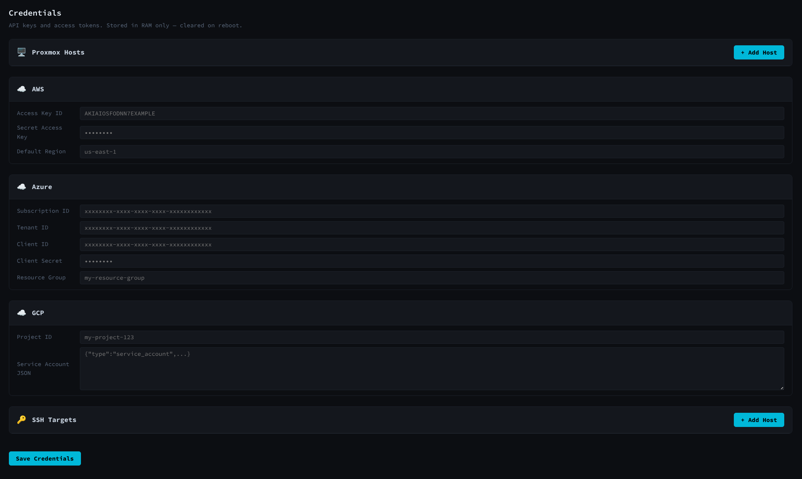
ZFS is the storage primitive for everything in debz — not just the OS root, but every workload, every VM disk, every container filesystem. The Pool Designer walks you through selecting drives, choosing a RAID profile (mirror, RAIDZ-1/2/3, dRAID), and previewing usable capacity and fault tolerance before committing. Pools are provisioned with sensible defaults: ashift=12, autotrim=on, compression=lz4, acltype=posixacl.
The ZFS view gives you a live look at every pool and dataset across the fleet — capacity, compression ratios, scrub state, snapshot counts, and replication lag. Virtual machines run on ZFS-backed volumes so they inherit copy-on-write snapshots automatically: roll back a VM in seconds, clone it for testing, or send it to a remote node for live migration. Snapshots before every apt upgrade happen automatically via the APT hook baked into the image.
The Dashboard gives you an at-a-glance view of the entire infrastructure: node health, cluster membership, storage utilization, active alerts, and recent events — all on one screen. It pulls live data from the state database on the Cluster Manager, which the reconciliation daemon keeps current by polling every registered node every 30 seconds.
The Audit Trail records every action taken through the web UI — who triggered it, when, what changed, and whether it succeeded. This gives you a clear picture of infrastructure history for compliance reviews, post-incident analysis, or just understanding what changed before things went sideways. The Logs view streams and searches journal output from any node or service, filtered by host, unit, severity, or time range.
The live ISO boots into a full GNOME desktop with the debz web UI already open in Firefox. You can design your cluster topology, configure networking, build your ZFS pool layout, and browse the full interface — all before committing a single byte to disk. The live session runs an ephemeral SQLite database in RAM; anything you configure (cluster designs, pool layouts, service definitions) can be exported and imported into the installed Cluster Manager so your work carries over.
When you are ready to install, the browser-based installer guides you through disk selection, ZFS pool configuration, hostname, network setup, and user creation. The whole process takes two to five minutes on typical hardware. The system powers off cleanly when done — remove the USB drive, power back on, and your node is running. No partitioning spreadsheets, no Kickstart files, no post-install scripts to remember.
Two editions. Both start with a USB key or image.
Burn the ISO to a USB drive or attach it as a disk image — that’s the only manual step. Everything after that is automatic.
Live & Standalone
Boot from USB into a full Debian 13 GNOME desktop — completely ephemeral. Nothing touches the machine’s disk. Browse, test tools, use it as a throwaway environment. Pull the USB out and the machine is exactly as you found it.
When you’re ready to install permanently, the guided installer sets up ZFS on root with ZFSBootMenu boot environments in about 90 seconds. Pick standalone mode — hostname, user, password, done.
From any installed node you can also spawn VMs and containers to attached KVM hosts or Proxmox servers, run Salt states and Ansible playbooks locally, and install full server roles: storage node, VDI host, KVM hypervisor.
- Ephemeral live desktop — GNOME, dark mode, Firefox, terminal
- ZFS on root installer — encrypted or plain, 90-second install
- Salt + Ansible single-node (masterless)
- Spawn VMs to KVM / Proxmox from live session
- In-place role install: storage, VDI, KVM hypervisor
- Offline / air-gap ready — embedded darksite APT mirror
- Simple web UI: install wizard, ZFS health, snapshots, logs
Cluster Provisioning
Deploy the first node as a Cluster Manager — it generates all WireGuard keys, starts Salt master, initialises the state database, and serves a hub configuration file on the LAN. Every subsequent node just boots and joins automatically.
No manual key exchange. No bootstrap problem. Joining nodes fetch the cluster config over plain LAN HTTP before WireGuard starts — deterministic IPs derived from LAN addresses, no pre-registration required.
The full web UI manages the fleet: node inventory, WireGuard mesh health, golden image pipeline, cluster deploy, fleet-wide Ansible, and an audit trail. Scale from 1 node to 50 in the same flow.
- Everything in Free
- 3 installer modes: standalone / cluster-manager / join
- 4-plane WireGuard mesh (mgmt, k8s, storage, exit)
- SQLite state.db — live node inventory, auto-updated every 30s
- Fleet Ansible — auto-populated inventory from state.db
- Golden image pipeline — snapshot, clone, stamp, spawn
- Full web UI — nodes, WireGuard, golden images, cluster deploy
- KVM + Proxmox + etcd + k8s worker + LB firstboot scripts
- Internal DNS API, cert issuance, audit trail
ZFS — and why it changes everything.
Most operating systems treat storage like a filing cabinet: files go in, files come out, and when something goes wrong you find out after the fact — usually at the worst possible moment. ZFS is fundamentally different. It organises storage as a tree of datasets — each one an independent, live volume with its own settings, its own snapshot history, and optionally its own encryption key. Every write is checksummed. Every read is verified. Silent corruption is not possible.
debz installs every node with the same fixed dataset layout. This is intentional: everything else — snapshots, boot environments, replication, per-app encryption — builds predictably on top of it.
rpool/ROOT/<hostname>/rpool/home/homerpool/srv/srvrpool/var/lib/var/librpool/var/log/var/logrpool/srv/postgres, rpool/srv/gitea, and rpool/srv/media
— each with a separate encryption key, its own snapshot schedule, and its own size quota.
Encrypt one tenant’s data independently from another’s.
Replicate only the database to a backup node. Delete a dataset and the data is
cryptographically gone — no orphaned files, no forgotten mounts.
Boot environments — your undo button for the whole OS.
Think of a boot environment as a save point for the entire operating system. Before every upgrade, debz creates one automatically. If the upgrade breaks something, you reboot, pick the previous environment from the boot menu, and you’re running the old system in 30 seconds — with zero data loss, because your home directories, application data, and container volumes live in separate datasets that are never rolled back.
How debz fits in.
It targets teams that live in Debian and want ZFS guarantees, overlay networking, cluster management, and a golden image pipeline without stitching together five separate tools.
| Capability | debz | Ubuntu + ZFS | TrueNAS Scale | Proxmox VE | Manual Debian |
|---|---|---|---|---|---|
| General-purpose host OS | ✓ | ✓ | NAS only | Hypervisor only | ✓ |
| ZFS on root (enforced) | ✓ | Optional | ✓ | ✓ | Manual |
| ZFSBootMenu boot environments | ✓ | ✗ (zsys, abandoned) | ✗ | ✗ | Manual |
| APT snapshot hooks | ✓ | Partial (zsys) | N/A | N/A | ✗ |
| Offline / air-gap installer | ✓ | ✗ | ✗ | ✗ | ✗ |
| Secure Boot + MOK auto-sign | ✓ | Partial | ✗ | Partial | Manual |
| Four WireGuard planes built-in | ✓ | ✗ | ✗ | ✗ | ✗ |
| Ansible-ready (pre-installed) | ✓ | ✗ | ✗ | ✗ | ✗ |
| Kubernetes on ZFS (wg2) | ✓ | External | ✗ | External | Manual |
| Golden image pipeline (CoW) | ✓ | ✗ | ✗ | Partial | ✗ |
| Browser management UI | ✓ | ✗ | ✓ | ✓ | ✗ |
| eBPF tooling pre-installed | ✓ | ✗ | ✗ | ✗ | ✗ |
| VDI streaming (SRT/HLS/WebRTC) | ✓ | ✗ | ✗ | ✗ | ✗ |
| Debian base | ✓ | Ubuntu | ✓ | ✓ | ✓ |
Tools you probably don't need to wire together anymore.
debz isn't competing with your stack — it doesn't care what runs on the node once it's handed off. Its entire job is to conjure hardware from nothing: burn, plug in, walk away. The node comes up provisioned, meshed, and observable. Everything after that is yours. Your CI/CD, your Terraform, your Kubernetes, your monitoring — none of it changes. Zero impact on existing sites.
That said, a surprisingly large number of tools quietly become optional once debz is in the picture. Some of them cost serious money. Most of them are just a config file with a web UI stapled on.
Tailscale / NetBird / ZeroTier
A WireGuard key, a CIDR block, and a coordination endpoint — that's the whole product. debz ships four WireGuard planes on every node with deterministic addressing, automatic key distribution during cluster bootstrap, and zero dependency on any external coordination service. No SaaS account, no per-seat pricing, no phone home. The mesh is yours.
Splunk / Datadog / New Relic
Observability platforms that charge by ingestion volume for the privilege of indexing your own logs. debz ships eBPF tooling (bpftrace, bcc) pre-installed on every node — kernel-level tracing, syscall visibility, network flows, without an agent, without a pipeline, and without a bill that scales with how much you want to see. Ship logs wherever you like; the node doesn't care.
Packer
Packer builds machine images by booting a VM, running a provisioner, and snapshotting the result. debz does this natively via ZFS CoW — snapshot a running boot environment, clone it, and you have an immutable golden image. No template files, no plugin chain, no build time. The image already exists; it's just a dataset.
Portworx / OpenEBS / Longhorn
Kubernetes persistent volume solutions that add a storage layer on top of whatever
the node already has. debz nodes present ZFS datasets directly as PVs — snapshots,
encryption, zfs send/recv replication, and cloning come with the
filesystem. No storage operator to install, no separate licensing tier for enterprise
features that should have been free.
Veeam / Rubrik / Commvault
Enterprise backup platforms that sell you a complex agent-based pipeline to do what
zfs send | ssh target zfs recv already does — atomically, at the
block level, incrementally, with no application quiescing required. Sanoid handles
snapshot retention policy. The replication is the backup. No agents, no appliance,
no annual true-up.
Terraform (bare-metal bootstrap)
Terraform excels at cloud infrastructure but has historically needed external help to bootstrap physical hardware: IPMI modules, MaaS providers, custom remote-exec provisioners. debz handles that layer directly — burn a USB or attach a seed disk, and the node provisions itself. Terraform picks up the handoff and manages everything above the OS line from there, exactly as before.
MaaS / Cobbler / Foreman
PXE provisioning systems require a DHCP server, a TFTP server, network boot infrastructure, and ongoing maintenance. debz provisions from a USB drive or a small seed disk image — no network changes, no DHCP reservations, no PXE stack to maintain. Plug it in, power on, walk away.
Puppet Enterprise / Chef Automate
Configuration management platforms that charge enterprise licensing fees for a server and a web UI on top of an open-source engine. debz is Ansible-ready out of the box — Ansible, Helm, and kubectl are pre-installed on every node. Bring your own playbooks. No license server, no per-node fee, no lock-in.
Kickstart / Preseed / cloud-init
First-boot configuration systems. debz's answers.env seed disk
is the same idea, simpler — a FAT32 volume with a single env file. No XML,
no YAML anchors, no cloud metadata service required. cloud-init still works fine
on any node debz installs if your pipeline depends on it.
HashiCorp Vault (node identity)
Vault solves secret distribution in part because nodes have no built-in identity. Every debz node gets a unique WireGuard keypair, machine-id, and hostname at install time — identity is structural, not bolted on. The WireGuard mesh is the trust boundary. Vault still makes sense for application secrets; it just doesn't need to solve node identity too.
Custom ZFS bootstrap scripts
Every team that runs ZFS on root has a sprawling bootstrap script — partition the disk, create the pools, set properties, debootstrap, configure GRUB, generate initramfs, pray. debz encapsulates all of that in a tested, reproducible installer that produces the same pool layout every time. ZFSBootMenu, APT snapshot hooks, and Secure Boot signing are included — not left as an exercise for the reader.
Vagrant
Vagrant spins up local dev VMs by wrapping a hypervisor and a box image with a Ruby DSL. A debz golden image clone takes under a second — CoW snapshot, new hostname, new machine-id, unique WireGuard identity. No Vagrantfile, no box registry, no provider plugin. The "box" is a ZFS dataset.
Documentation
Everything you need to know about deploying, operating, and extending the platform.
Installation Guide
Two deployment modes — ephemeral live desktop and permanent node provisioning.
Node Templates
Desktop, Server, KVM, Kubernetes, Storage — what each role installs and why.
ZFS Dataset Layout
The fixed dataset hierarchy, why each decision was made, how to extend it safely.
Boot Environments
Create, activate, and roll back OS snapshots using ZFSBootMenu.
Snapshot System
APT hooks, 15-minute /srv timer, count-based retention.
ZFS Encryption
AES-256-GCM dataset encryption — passphrase at ZFSBootMenu, key storage, recovery.
Replication
Streaming datasets to TrueNAS, other nodes, or cloud VMs over wg3.
Secure Boot + MOK
MOK key generation, ZFS module signing, DKMS auto-sign, enrollment walkthrough.
Air-Gap Deployment
The embedded darksite APT mirror — offline installs with zero internet dependency.
WireGuard Planes
All four planes — addresses, ports, services, hub.env, live peer updates.
Golden Images
Build, stamp, and spawn CoW clones — the full pipeline from ISO to running cluster.
Cluster Bootstrap
DEBZ-SEED, enrollment flow, node registration, Kubernetes via wg2, autobootstrap loop.
Web UI
All panels — install wizard, WireGuard, golden images, VMs, ZFS, K8s, fleet inventory, logs.
Proxmox + debz
ISO upload, VM creation, golden image deploy, data disks for ZFS topology testing.
Extending debz
Custom repos, postinstall hooks, Ansible, Helm, Cilium, and drop-in Debian integration.
Command Reference
Every debz-* command — installer, firstboot, cluster ops, ZFS, network, security, and live-only tools.
FAQ
Why ZFS, why WireGuard, air-gap installs, use cases, philosophy — the big questions answered.
License
debz is BSD 3-Clause. Use it commercially, keep modifications private, sell binary ISOs — no restrictions.
Free vs Pro
Both editions run from the same ISO format. The edition is baked in at build time — it determines what the installer offers, what runs at first boot, and which web UI you get.
| Feature | Free | Pro |
|---|---|---|
| Live & Install | ||
| Ephemeral live GNOME desktop | ✓ | ✓ |
| ZFS on root installer | ✓ | ✓ |
| ZFS encryption (AES-256-GCM) | ✓ | ✓ |
| ZFSBootMenu boot environments | ✓ | ✓ |
| APT snapshot hooks (pre-upgrade) | ✓ | ✓ |
| Offline / air-gap installer (darksite) | ✓ | ✓ |
| Secure Boot + MOK auto-sign | ✓ | ✓ |
| Seed-based autoinstall (USB answers.env) | ✓ | ✓ |
| Installer modes | ||
| Standalone mode (independent node) | ✓ | ✓ |
| Cluster Manager mode (generates all keys + DB) | ✗ | ✓ |
| Join mode (fetches hub.env over LAN, joins mesh) | ✗ | ✓ |
| Virtualisation & containers | ||
| KVM / libvirt hypervisor role | ✓ | ✓ |
| Proxmox VE node role | ✓ | ✓ |
| Firecracker microVM runtime | ✓ | ✓ |
| Spawn VMs from live session (to KVM/Proxmox) | ✓ | ✓ |
| Config management | ||
| Salt (single-node masterless mode) | ✓ | ✓ |
| Ansible (single-node playbooks) | ✓ | ✓ |
| Salt master (fleet-wide states) | ✗ | ✓ |
| Fleet Ansible (auto-inventory from state.db) | ✗ | ✓ |
| Networking | ||
| WireGuard (single interface, manual config) | ✓ | ✓ |
| 4-plane WireGuard mesh (auto-configured at join) | ✗ | ✓ |
| Internal cluster DNS API | ✗ | ✓ |
| TLS cert issuance (cluster CA) | ✗ | ✓ |
| Fleet management (Pro only) | ||
| SQLite state.db (live node inventory) | ✗ | ✓ |
| debz-reconcile (30s poll → auto-inventory) | ✗ | ✓ |
| Golden image pipeline (snapshot + clone) | ✗ | ✓ |
| Audit trail | ✗ | ✓ |
| Web UI | ||
| Dashboard (system stats, ZFS health) | ✓ | ✓ |
| Install wizard | ✓ | ✓ |
| ZFS / snapshots / boot environments panel | ✓ | ✓ |
| Log viewer | ✓ | ✓ |
| Ansible launcher (single-node) | ✓ | ✓ |
| Node fleet panel | ✗ | ✓ |
| WireGuard mesh panel | ✗ | ✓ |
| Golden images panel | ✗ | ✓ |
| Cluster deploy panel | ✗ | ✓ |
| Download | ↓ Free | ↓ Pro |
Get debz
- Live ephemeral desktop
- ZFS standalone installer
- Salt + Ansible single-node
- Spawn VMs to KVM / Proxmox
- Storage / VDI / KVM role install
- Offline / air-gap ready
- Simple web UI
- Everything in Free
- Cluster Manager mode
- 4-plane WireGuard mesh
- State DB + fleet reconciler
- Fleet Ansible (auto-inventory)
- Golden image pipeline
- Full web UI (nodes, deploy, WG)
dd if=debz.iso of=/dev/sdX bs=4M status=progress
https://<ip>:8443.
live with no password prompt.
SSH: username live / password live.
These exist only for the live session — nothing is written to disk until you run the installer.
| Resource | Minimum | Recommended |
|---|---|---|
| CPU | 2 cores (x86_64) | 4+ cores |
| RAM | 4 GB | 8 GB+ |
| Disk | 40 GB | 100 GB+ (NVMe preferred) |
| Firmware | UEFI — Secure Boot optional (MOK enrolled automatically) | |